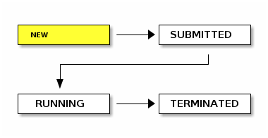
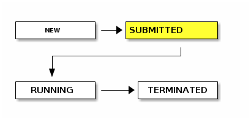
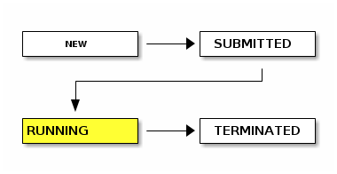
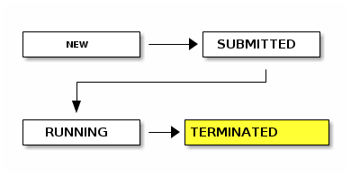

What is GC3Libs?
GC3Libs is a Python library to drive application execution on Grids and SGE clusters.
GC3Libs provides ways to customize execution control based on application type, and compose applications to form complex execution patterns.
GC3Libs is part of a larger pack of tools called GC3Pie.
What is GC3Pie, then?
GC3Pie consists of:
- GC3Libs: Python library, aimed at programmers to drive application execution on Grids and clusters.
- GC3Utils: simple command-line interface to the core GC3Libs functionality: submit/monitor/kill a job, retrieve output, etc.
- GRosetta/GGamess/GRunDB/etc.: Driver scripts developed for specific groups, but that may be of independent general interest.
How is GC3Libs different?
GC3Libs runs specific applications, not generic jobs.
That is, GC3Libs exposes Application classes whose programming
interface is adapted to the specific task/computation a scientific
application performs.
GC3Libs supports a few applications in the main library. (Our goal is to support more and more.)
You can add your own applications. You have to add you own applications.
A stupid example
class SquareApplication(Application): """Compute the square of an integer, remotely.""" def __init__(self, x): Application.__init__( self, executable = '/usr/bin/expr', arguments = [str(x), '*', str(x)], inputs = [ ], outputs = [ ], stdout = "stdout.txt", )
A less stupid example
app = RosettaDockingApplication( 100, # number of decoys to compute '1brs.pdb', # input file flags_file='flags.txt', # optional )
The RosettaDockingApplication class knows how to invoke Rosetta's
docking_protocol program to compute N decoys of a given input file.
GC3Libs application model
An application is a subclass of the gc3libs.Application class.
Generic Application class patterned after ARC's xRSL model.
At a minimum: provide applications-specific command-line invocation.
Advanced users can customize pre- and post-processing, react on state transitions, set computational requirements based on input files, influence scheduling.
Application lifecycle
GC3Libs Application objects mimic POSIX processes life-cycle.
4 states of an Application object: NEW, SUBMITTED, RUNNING, TERMINATED.
As with processes, after initial submission, all state transitions happen automatically. GC3Libs software can only monitor states and react on changes.
Each state transition triggers a method call on the Application
object. E.g., after submission, the submitted() method is called.
Application lifecycle: state NEW

NEW is the state of "just created" Application objects.
The Application has not yet been sent to the Grid: it only exists locally.
Application lifecycle: state SUBMITTED

SUBMITTED applications have been successfully queued to a remote execution cluster.
Local Python object has a reference to the remote "job ID".
Application lifecycle: state RUNNING

RUNNING state happens when the computational job associated to an application starts executing on the remote cluster.
This transition happens independently of GC3Libs; we can only monitor progress.
Application lifecycle: state TERMINATED

TERMINATED is when a computational job has finished running, for whatever reason.
The exit code of TERMINATED jobs can be inspected to find out whether the termination was successful or unsuccessful, or if the program was forcibly ended.
A successful run or not?
There's a single TERMINATED state, whatever the job outcome.
As with POSIX processes, you have to inspect the exit code and signals to determine the cause of "job death".
-
If
os.WIFSIGNALED(app) = Falsethen job run to completion: check exit code! -
If
os.WIFSIGNALED(app) = Truethen some error occurred before end of application code.
Grid- and batch-system errors are encoded as "pseudo-signals".
E.g., if os.WTERMSIG(app) = 124 then job was killed by remote
batch system.
Core operations
Core operations: submit, update state, retrieve (a snapshot of) output, cancel job.
Core operations are synchronous.
Operations are always performed by a Core object.
Core implements an overlay Grid on the resources
specified in the configuration file.
Core operations: verb/object interface
Get an instance of Core:
g = Core(read_config_file(path))
Then you can operate on Application instances:
-
submit:
g.submit(app) -
monitor:
g.update_state(app) -
fetch output:
g.fetch_output(app, dir)(starts working as soon as application is RUNNING) -
cancel job:
g.kill(app) -
free remote resources:
g.free(app)
Core operations: self-action interface
Get an instance of core, then "attach" an application to it:
g = Core(read_config_file())
app.attach(g)
The application can now operate on itself:
-
submit:
app.submit() -
monitor:
app.update_state() - etc.
Combined with state-transition methods, this gives a way to embed
job control logic in the Application object.
Think of automatic resubmission if certain conditions are met.
A simple GC3Libs script structure
- Create `gc3libs.Core` instance
- Create instance(s) of the application class
- Submit applications
- Monitor application status (loop)
- Retrieve results
- Postprocess and display
What if…?
Looping is fine with a small number of jobs.
What if I want to run 10'000 jobs in a session? Do I have to loop/wait until all of them are finished?
What if my box crashes in the middle of the loop? Do I lose all running jobs?
What if the proxy expires just in the middle of the loop?
How do I manage authentication with GC3Libs?
You don't.
GC3Libs will check that there is always a valid proxy and certificate when attempting Grid operations, and if necessary, renew it.
GC3Libs provide a specific authentication module, that abstracts on the various authentication models. It can be used to ease/automate authentication steps when accessing the Grid.
Persisting jobs
GC3Libs provides a simple persistence framework:
-
save a live
Applicationto disk, return "persistent ID" - load a saved application given its "persistent ID"
- delete a saved application
- list IDs of saved applications (very simplistic! your input needed: what kind of query/select operations should we support?)
Filesystem-based storage (1 job, 1 file). But interface is generic, could use SQL, MongoDB, etc.
Implemented on top of Python's pickle module: it can persist any
kind of object, not just jobs.
Asynchronous operations
The Engine class provides all core operations,
with a non-blocking interface.
Calling core methods on an Engine instance returns immediately to
the caller; operations are actually executed when you call the
Engine.progress() method.
Which you can do in a separate thread, thus achieving asynchronous operation.
The Engine class
Same programmatic interface as the Core class:
can drop an Engine instance every time a Core is needed.
The progress() method will advance jobs through their lifecycle;
use state-transition methods to take application-specific actions.
(E.g., post-process output data.)
An engine can automatically persist the jobs, if you so wish.
(Just pass it a Store instance at construction time.)
A not-so-simple GC3Libs script structure
- Create `gc3libs.core.Core` instance
- Create a `gc3libs.persistence.FilesystemStore` instance
- Create a `gc3libs.core.Engine` instance
- Load saved jobs into it
- Create new instance(s) of the application class
- Let engine manage jobs until all are done
-
Retrieve results(theEnginedoes it) - Postprocess and display
A not-so-simple GC3Libs script (code)
core = Core(read_config_file) store = FilesystemStore(directory) apps = [ store.load(jobid) for jobid in open(session, 'r').readlines() ] for arg in new_args: apps += Application(arg, ...) engine = Engine(core, apps, store) engine.wait() # call progress() until done total_global_postprocess()
This is the actual structure of the GRosetta/GGamess/GRunDB scripts!
Job dependency management
An Engine manages all jobs concurrently.
What if there are inter-application dependencies?
GC3Libs provides (untested) Directed Acyclic Graph support.
DAGs are created programmatically from Python code.
Which means, no graphical editor. But also means you can create workflows on-the-fly as your computation proceeds.
Composition of jobs (I)
The unit of job composition is called a Task in GC3Libs.
An Application is the primary instance of a Task.
However, a single task can be composed of many applications. A task is a composite object: tasks can be composed of other tasks.
Workflows are built by composing tasks in different ways. A "workflow" is a task, too.
Composition of jobs (II)
The SequentialTask class takes a list of jobs and executes them
one after the other. Subclass and override the next() method to
determine early exit conditions, or to modify the list dynamically.
The ParallelTask class takes a list of jobs and executes all of
them in parallel. It's done when all jobs are done: there's an
implicit synchronization barrier at the end.
Composition of jobs (III)
Application, SequentialTask and ParallelTask are all
subclasses of the same Task interface.
So, you can create sequential collections of parallel jobs, parallel collections of sequential collections, etc.
Any DAG can be expressed as composition of these classes. And collections can be mutated at run-time.
An Engine really manages a list of tasks, so we are really
scripting workflows here.
Well, almost///
GC3Libs in active development. We are still experimenting with some APIs. Parts of the code not fully tested.
Long list of features requests, planned improvements, and bug reports.
Small team: we work is being prioritized according to requests from users, but sometimes it takes quite some time from request to implementation.
References
GC3Pie home page: http://gc3pie.googlecode.com
Source code: svn co http://gc3pie.googlecode.com/svn
Mailing list: gc3pie@googlegroups.com
Any questions?